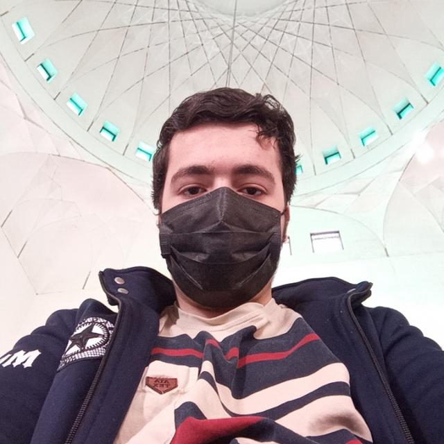

به نام خدا
من محمد حسین شالچیان متولد بهمن ماه سال 1381 و فارغ التحصیل دبیرستان صلحا هستم
من در دبستان های پیام رستگاران، امام حسین ع و پیام هدایت تحصیل کردم و دوران راهنمایی را در مجمتمع امام جواد ع گذراندم
به یاری خدا توانستم در رشته مهندسی کامپیوتر دانشگاه شریف قبول شوم و علاقه دارم در آینده گرایش هوش مصنوعی را انتخاب کنم